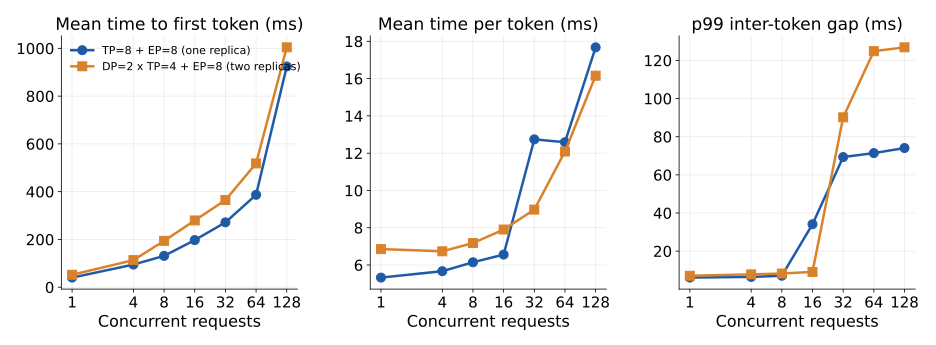
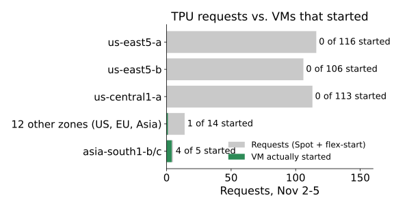

The problem
In a Mixture-of-Experts (MoE) model, each layer has attention, which reads every earlier token through a KV cache, and an expert FFN, where a router sends each token to a few of many experts.
The two parts want different things. Attention cost grows with context length and KV-cache traffic. Experts are efficient only when many tokens reach each expert at once. Serving both on the same chips ("colocated") ties their memory and parallelism together.
AFD puts attention and experts on separate chip pools, so each can be sized and parallelized on its own, and one expert pool can batch tokens from several attention workers. The price is an all-to-all dispatch and combine between the pools in every layer.
Research questions
- For the same model, workload, and TPU budget, when does tuned AFD beat colocated serving on the throughput vs. latency Pareto frontier?
- Which TPU settings matter most for AFD: attention/FFN split ratio, expert batch size, batching wait, microbatch overlap, device placement?
Why 8 chips, not 4

The experts alone need 58 GB, at least 2 of v6e's 32 GB chips (3 with working space). On a 4-chip host, AFD could only try one split (1 attention : 3 expert). An 8-chip host allows 2:6, 3:5, 4:4, so the split-ratio question becomes testable. We fixed the budget at 8 chips for both systems.
Method so far
System
- Model: Qwen3-30B-A3B, bf16. 48 layers, 128 experts, 8 active per token (3B of 30B parameters per token).
- Hardware: one TPU v6e host, 8 chips on a 2D torus (ICI).
- Software: vLLM 0.32 with the vllm-torchtpu plugin (PyTorch model code compiled to TPU through torch_tpu / XLA). AFD will be built inside this stack.
Colocated baselines (the bar AFD must clear)
- TP=8 + EP=8: one copy of the model across all 8 chips.
- DP=2 × TP=4 + EP=8: two attention replicas sharing the experts across all 8 chips.
We compare AFD against the better of the two at each load, not against a single fixed setup.
Design choices and why
- bf16 KV cache, not the recommended fp8. With fp8 and one KV head per chip, the fast batched attention kernel decodes garbage after the first token (vllm-torchtpu issue #2435). Qwen3 has 4 KV heads, so at TP=4 or 8 we hit exactly that case. bf16 is correct and still fits.
- Correctness gate: every run first checks greedy answers with known results (e.g. counting to 30) before any timing.
Benchmark protocol
- Closed-loop load: 1, 4, 8, 16, 32, 64, 128 concurrent requests; 200 requests per point.
- Random prompts of exactly 1024 input and 256 output tokens; greedy decoding; no prefix caching.
- Every sweep run twice; points agree within 1–4%.
- Profiles (XProf + Chrome traces, all 8 chips) taken in a separate run, so profiling overhead never touches the numbers.
Reproducible, hands-off runs
A deadline timer uploads and deletes the VM even if a step hangs. Code: github.com/cx18121/afd-tpu-serving
Preliminary results: colocated frontier

Neither layout wins everywhere. One 8-chip replica is fastest per user up to 16 concurrent requests (188 → 152 tokens/s per user). Two 4-chip replicas give more total throughput at 32 and 128. AFD must beat this combined frontier, not one layout.
| Concurrency | 1 | 16 | 32 | 128 |
|---|---|---|---|---|
| TP=8: output tok/s | 183 | 2,116 | 2,341* | 5,204 |
| DP=2: output tok/s | 142 | 1,726 | 2,839 | 5,485 |
| TP=8: per-user tok/s | 188 | 152 | 79* | 57 |
| DP=2: per-user tok/s | 146 | 127 | 111 | 62 |
* TP=8 at 32 is unstable: three runs gave 1,789 to 2,893 tok/s; in slow runs about 10% of requests decode 5× slower.
Latency under load

Observation: tail inter-token latency jumps from ~8 ms to 70–127 ms at 16 requests per replica in both layouts (TP=8 at 16, DP=2 at 32). Hypothesis: decoding requests stall behind steps that also prefill new 1024-token prompts, and a 4-chip replica runs those steps slower (~125 ms vs ~70 ms). If so, this interference is a target for AFD and for splitting prefill from decode. We will check it in the traces.
What we learned the hard way

- Capacity, not quota, was the bottleneck. Every request in the course's three zones failed with stockout for 3 days. Searching all 20 v6e zones found Spot capacity in Mumbai (asia-south1), where all our runs happened.
- The compile cache is 112 GB for two layouts. It filled a 200 GB disk and is expensive to copy between regions; a cold start (about 15 min) is cheaper.
- Documented defaults can be wrong: the recommended KV setting gives wrong output for our model (#2435), and the documented cache variable is ignored by the code.
Plan to Dec 7
- Nov 9–15: split each decode step into attention, expert, and communication time from our traces (CCL-Bench); test the interference hypothesis. Design how to place attention and experts on separate chips inside vllm-torchtpu.
- Nov 16–22: AFD prototype on one 8-chip host: attention pool and expert pool joined by all-to-all dispatch/combine. Match the baseline's greedy outputs.
- Nov 23–29: sweep split ratios (2:6, 3:5, 4:4) with the same benchmark; first AFD vs. colocated Pareto plot.
- Nov 30–Dec 6: one optimization (microbatch overlap of dispatch with compute); final frontier; CCL-Bench entry with traces and workload cards.
Risks: TPU capacity (mitigated by the zone-searching launcher); how hard vllm-torchtpu makes it to place layers on different chips.